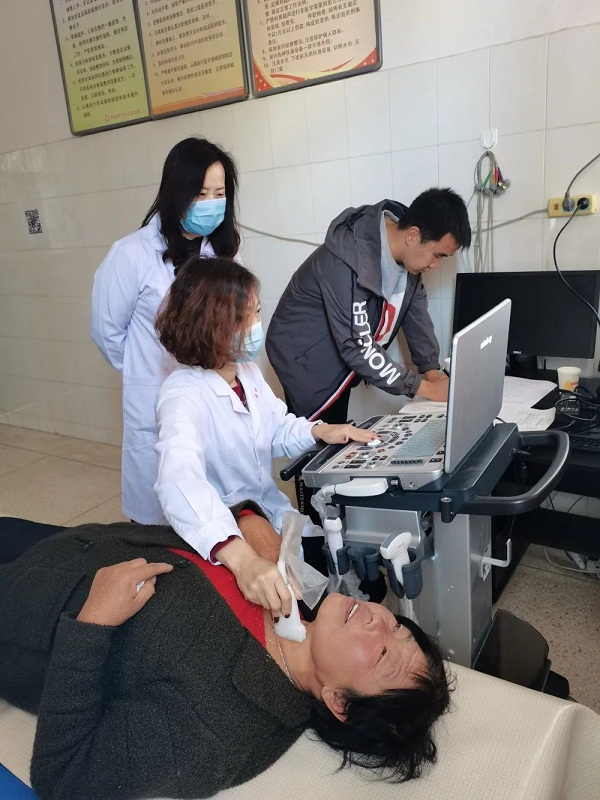
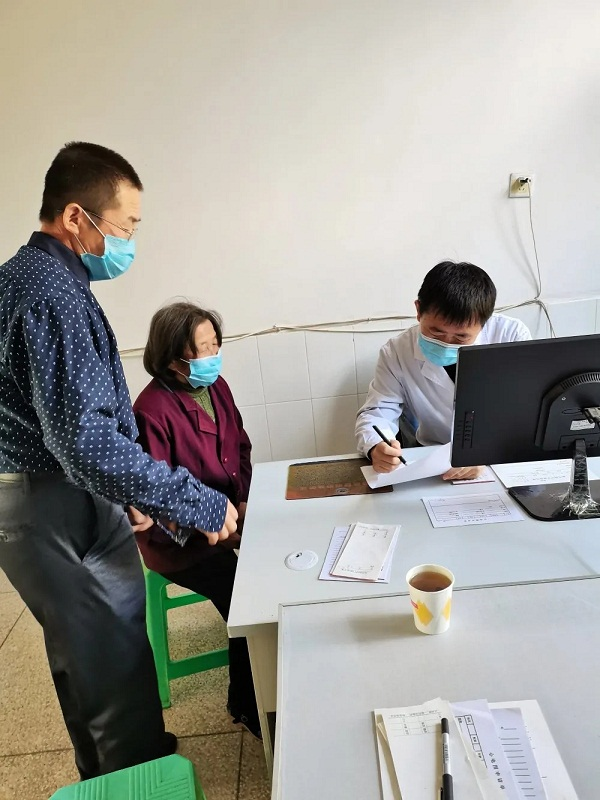

为纪念中国农工民主党成立90周年、农工党内蒙古自治区委成立35周年，巩固深化“不忘合作初心，继续携手前进”主题教育活动成果，进一步推动“履职能力建设”主题年活动深入开展，2020年10月17日，农工党赤峰市委组织党员医疗专家赴赤峰市敖汉旗四道湾子镇开展“全体党员下基层”活动。
活动现场，来自赤峰市医院、中蒙医院、传染病医院、妇幼保健医院、宁城县医院等医疗机构的心外科、呼吸科、消化科、肿瘤内科、超声科等十余名党员医疗专家为200余名现场群众测量血压、做超声检查，耐心细致地询问患者身体状况，有针对性地为他们介绍防病、治病、养生等知识，并结合患者实际情况为他们发放药品和农工党赤峰市委制作的健康知识讲座光盘。

在脱贫攻坚收官之年开展此次送医送药送健康义诊活动，为当地百姓送去优质的医疗服务，受到了广大群众的广泛赞誉。活动也让参与的党员同志们在思想上得到了一次深刻的教育，一致表示在今后的工作中要进一步履职尽责、积极奉献，继续利用界别优势和专业力量汇集社会资源，助力打赢脱贫攻坚战！
